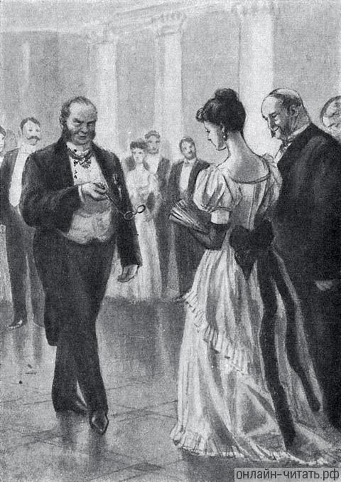
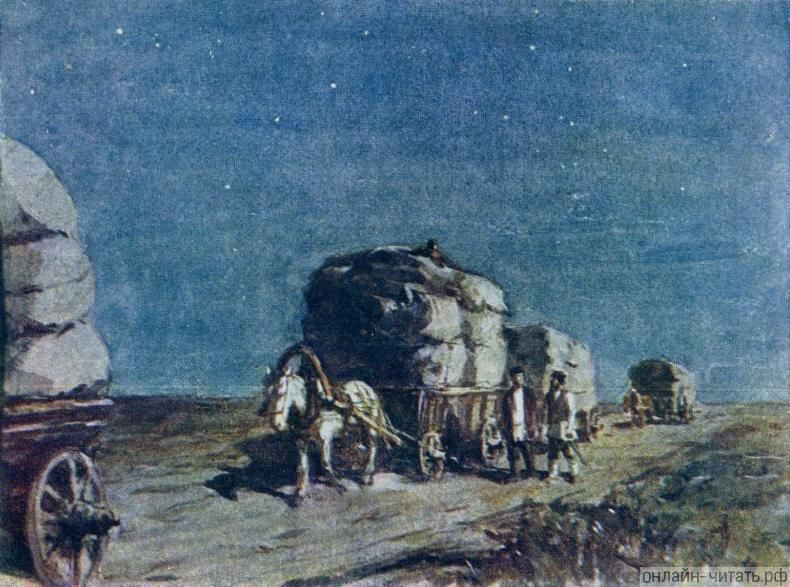
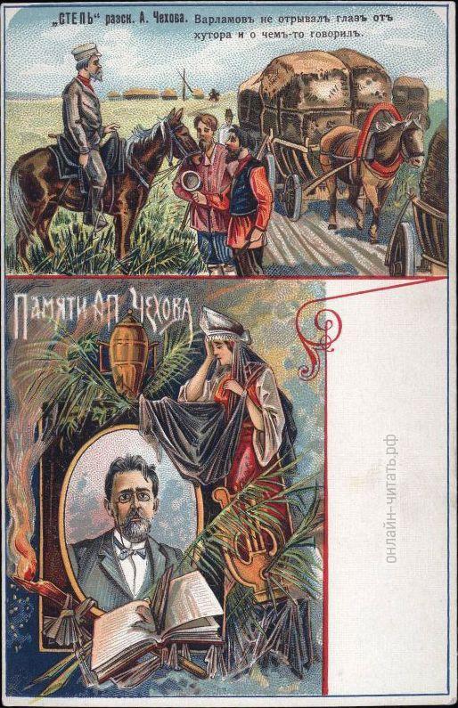
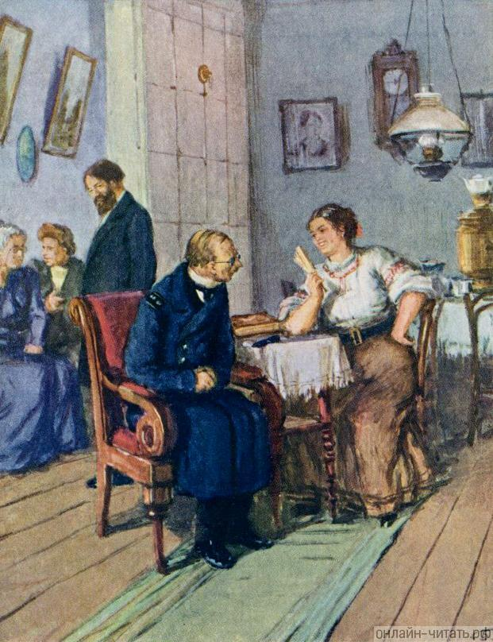
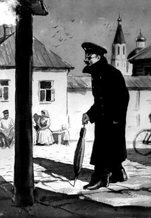

Биография
Антон Чехов родился в большой семье в Таганроге. Его отец, Павел Егорович, сначала гонял продавать быков из Воронежской губернии в Москву, а в 1858 году стал купцом третьей гильдии. В браке с Евгенией Морозовой у них родилось шестеро детей, сам Антон был третьим.
Обстановка в доме Чеховых была строгой: детям не позволяли бездельничать. Ежедневно в пять часов утра братья пели в церковном хоре, а после школы помогали отцу в бакалейной лавке. Все дети должны были изучать ремесло: Антон, например, познавал профессию портного. Мать же учила детей быть отзывчивыми, уважать и поддерживать слабых, любить природу и окружающих.
Учиться будущий писатель начал в 1868 году в таганрогской гимназии. Там он взял литературный псевдоним Чехонте, по прозвищу, которое дал ему один из учителей. В 13 лет Чехов впервые побывал в театре, где шла оперетта французского композитора Жака Оффенбаха «Прекрасная Елена». Именно тогда Чехов полюбил сцену и литературу.
В 1876 году Чехов-старший разорился, и вся семья уехала в Москву. Шестнадцатилетний Антон, завершавший обучение в гимназии, остался один и занимался репетиторством, чтобы заработать себе на жизнь. В эти годы он много читал, писал очерки для гимназических журналов, а журнал «Заика» с короткими зарисовками из таганрогской жизни отправлял братьям в Москву. Тогда же Чехов написал первую пьесу — «Безотцовщина» и водевиль «Недаром курица пела».
В 1879 году Чехов окончил гимназию и уехал из Таганрога в Москву. Там он начал заботиться о семье, обеспечивал близких на скромный доход от литературных публикаций. Дебют Чехова в печати состоялся в декабре того же года: в журнале «Стрекоза» были опубликованы рассказ «Письмо к ученому соседу» и юмореска «Что чаще всего встречается в романах, повестях и т. п.».
В этом же году Чехов поступил на медицинский факультет Московского университета имени И.М. Сеченова. Студент-медик жил у брата Ивана в подмосковном Воскресенске (сегодня город Истра). Там же в 1881 году он познакомился с заведующим Воскресенской земской больницей, доктором Павлом Архангельским. Еще во время учебы Чехов принимал больных, здесь же прошел практику, а после окончания университета остался работать уездным врачом. Летом 1884 года он перешел на должность заведующего звенигородской больницей.
Занятия в университете Антон Чехов совмещал с постоянной литературной работой. В основном он публиковался под псевдонимом Антоша Чехонте, позднее появились «Врач без пациентов», «Дяденька», «Человек без селезенки», «Балдастов», «Антонсон», «Брат моего брата» — всего около пятидесяти.
Чехов печатался в московских юмористических журналах «Будильник», «Зритель», «Осколки», сотрудничал с «Петербургской газетой», газетой «Новое время» и «Русскими ведомостями». В 1882 году писатель завершил работу над первым сборником рассказов «Шалость», но в печать он так и не вышел, вероятно из-за финансовых проблем. Первый сборник Чехова, «Сказки Мельпомены», увидел свет в 1884 году.
К 1885 году Чехов был уже популярным автором малых рассказов. Но в его литературный путь вмешался писатель Дмитрий Григорович, который раскритиковал молодого человека за растрату своего таланта. С таким мнением были согласны многие ведущие авторы и критики тех лет.
Но именно благодаря одному из критиков, издателю Алексею Суворину, Чехов смог раскрыть свой потенциал. В журнале Суворина «Новое время», с которым начал сотрудничать Чехов, авторам платили приличный гонорар, не ограничивали их ни по времени создания работ, ни по количеству слов. Именно в это благоприятное для писателя время вышли одни из его лучших работ: «Панихида», «Враги» , «Агафья», «Кошмар» и другие — и появился чеховский рассказ как новое явление в русской литературе. В «Новом времени» Антон Чехов впервые начал подписывать тексты собственным именем.
Произведения
Иллюстрации к произведениям:
-

Анна на шее
-

Степь
-

Степь
-

Студент
-

Человек в футляре
-

Человек в футляре